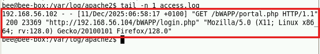
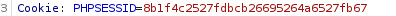

- 세션 ID가 노출되면 공격자는 그 세션 ID를 이용하여 인증과정을 우회해서 다른 사용자가 웹 사이트에 접속할 수 있음
URL로 세션 ID를 전달하면 노출되는 위험이 있음
- 대다수의 웹 서버는 웹 요청을 전달받으면 요청 URL를 로그 파일에 기록함 (아래와 같음)
/var/log/apache2 → tail 명령어 사용

로그를 남기게 되는데 공격자가 이러한 파일에 접근하면 세션 ID를 입수 가능함.
<실습>

세션 ID 값 노출 되는 것을 볼 수 있음
공격자가 중계 장치에 접근해서 로그를 조회한다면 세션 ID를 확인해서 가로챌 수 있음
[대응방안]
- URL에 노출되지 않도록 해야 함 ex) 쿠키나 폼의 hidden 필드로 전달되어야 함
- HTTPS 암호화 채널을 통해 전달됨
- 쿠키로 전달될 경우 secure, HttpOnly와 같은 쿠키 속성을 추가함
- 로그아웃 된 세션 ID는 즉시 파기해야 함
- 세션 ID는 랜덤 값으로 생성해서 추측할 수 없는 값이어야 함
- 유효기간을 적용해서 일정 시간이 지나면 세션 ID 파기